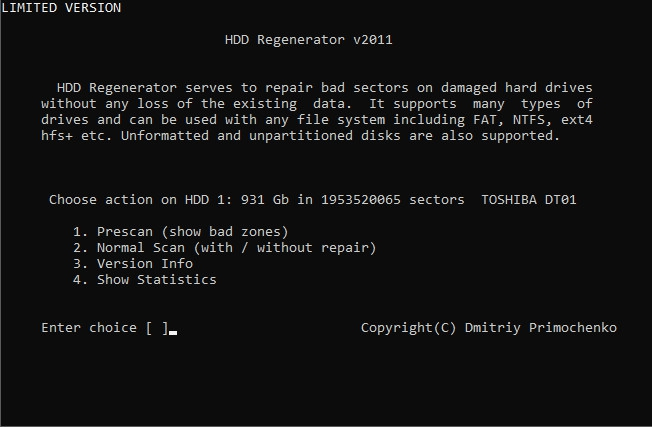
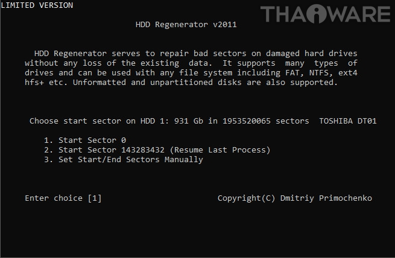
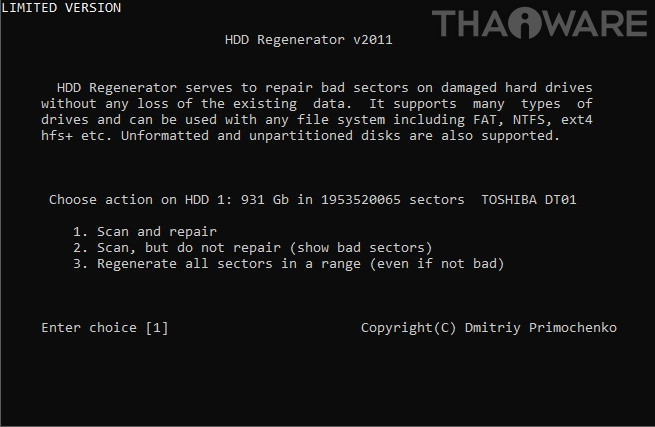
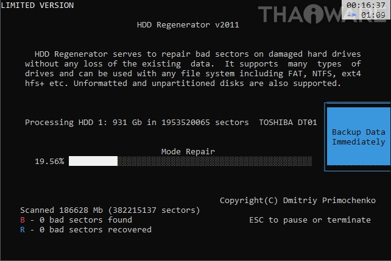

- เอาแฟลชไดรฟ์ที่ติดตั้งโปรแกรมมาเสียบกับคอมฯ ที่ฮาร์ดดิสก์ติด Bad Sector
- บูทเข้าหน้าแฟลชไดรฟ์
เมื่อบูทได้แล้วจะเข้ามาอยู่ในหน้าหลักของโปรแกรม HDD Recovery จากนั้นใส่ตัวเลขเพื่อเลือกฮาร์ดดิสก์ที่ติด Bad Sector (ในกรณีมีฮาร์ดิสก์หลายลูก)
 

- พิมพ์เลข 2 แล้วกด Enter เพื่อเลือกประเภทการสแกน
- พิมพ์เลข 1 แล้วกด Enter เพื่อเลือกสแกนและซ่อมแซม
- พิมพ์เลข 1 แล้วกด Enter เพื่อเลือกจุดเริ่มต้น
- รอจนโปรแกรมทำการสแกนและซ่อมแซมจนเสร็จ (ส่วนเวลาที่ใช้จะมากหรือน้อยขึ้นอยู่กับขนาดความจุของฮาร์ดดิสก์ ยิ่งความจุเยอะ ยิ่งใช้เวลานาน)

สุดท้ายลองเช็คดูว่าฮาร์ดดิสก์ของคุณที่ทำการสแกนไปแล้วนั้น มี Bad Sector ทั้งหมดกี่จุด และแต่ละจุดอยู่ตรงไหนบ้างโดยดูที่ด้านล่าง ตรงข้อความ "bad sectors found"กับ "bad sectors recovered" หรือกด ESC เพื่อออกไปเลือกที่หัวข้อ Show Statistics เพื่อดูตำแหน่งก็ได้
ถ้าหากจุดไหนที่สามารถซ่อมได้ มันจะขึ้นตัวอักษร R (Repaired) ให้เห็นแต่ถ้าจุดไหนที่ซ่อมไม่ได้มันจะขึ้นเป็นตัวอักษร B (Bad) ถ้าไม่แน่ใจก็ลองสแกนซ้ำดูอีกทีก็ได้ แต่ถ้าสแกนซ้ำยังเหมือนเดิม ให้คาดเดาไว้เลยว่าเปิด "แบดแท้" ซ่อมด้วยโปรแกรมไม่ได้
|